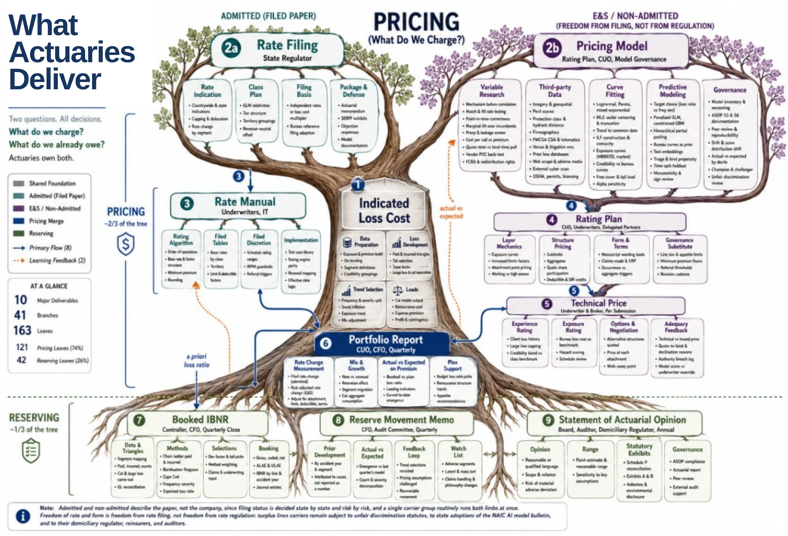
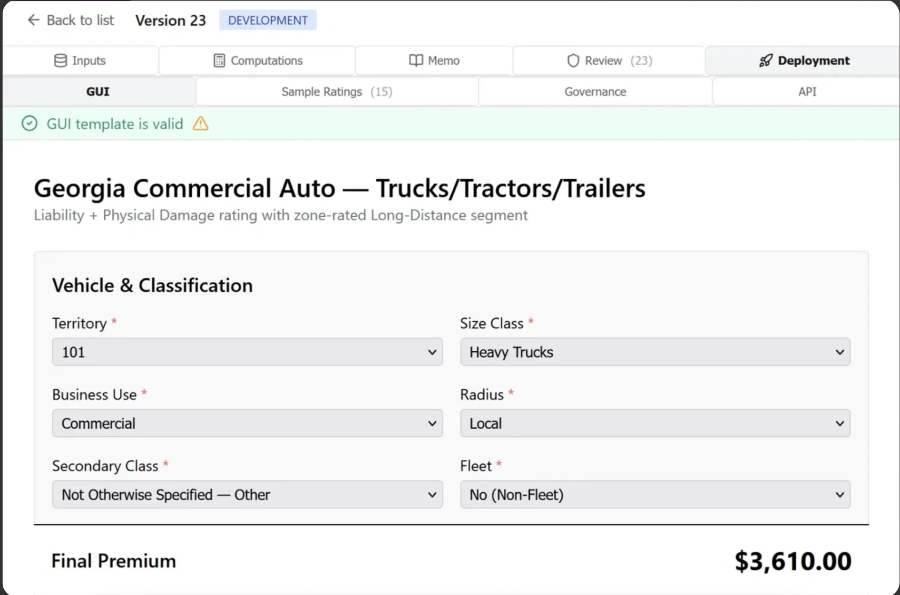
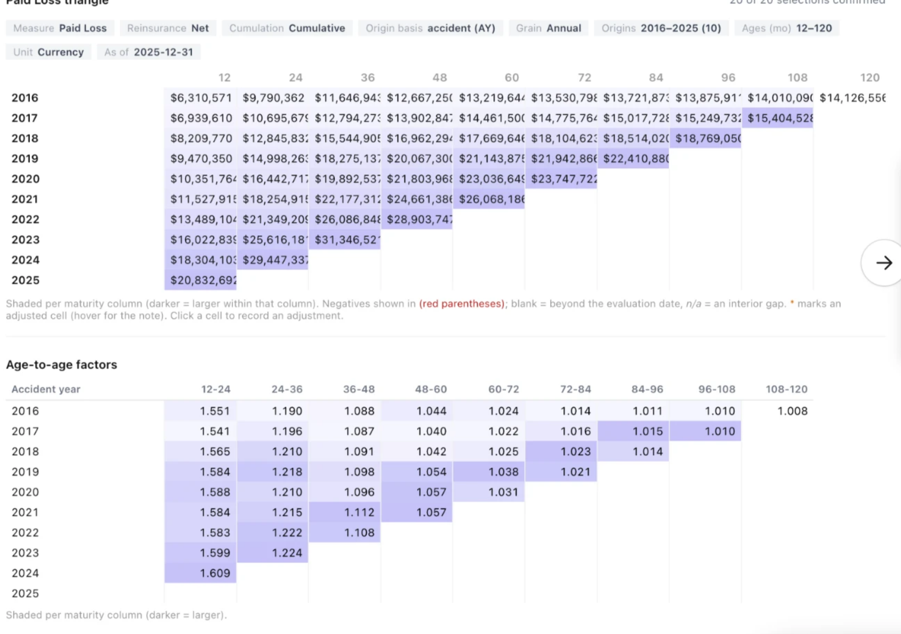
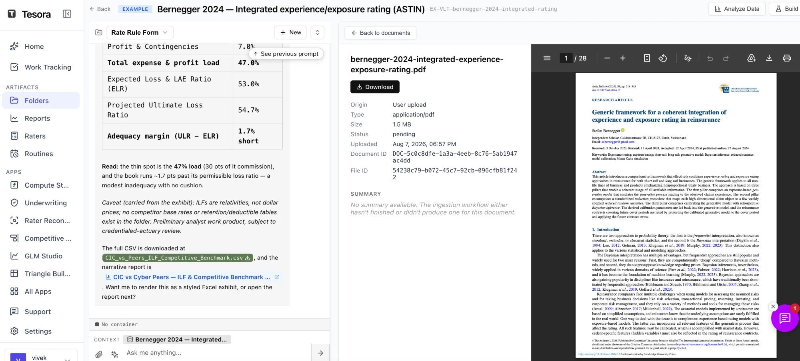
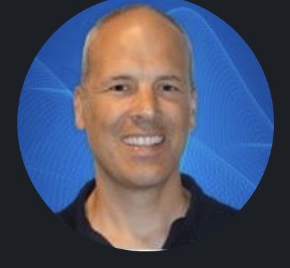
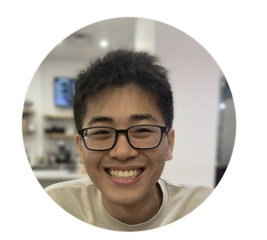
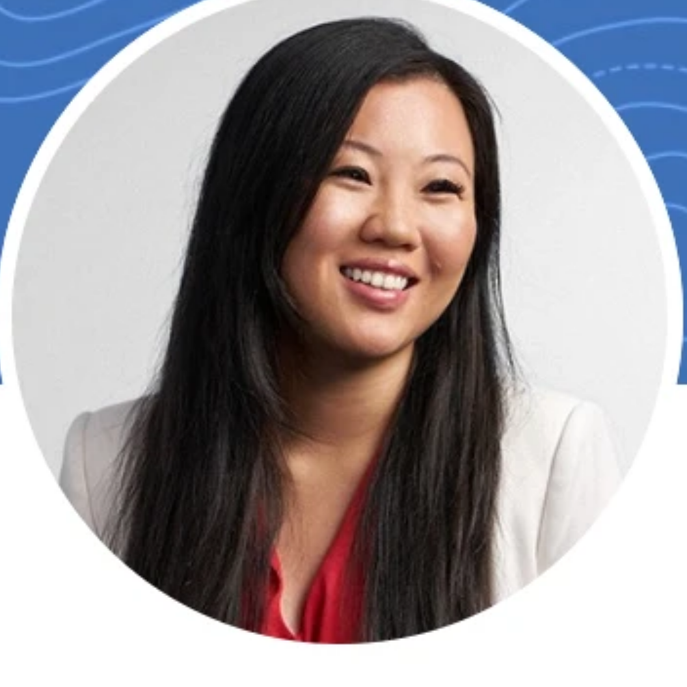

AI helps actuaries perform complex, multi-step actuarial tasks with every step documented and reproducible.
The more steps an actuary delegates to AI, the less certain they can be of the output. Tesora enables full tracing, documentation, and audit, so the actuary remains in control.

Every leaf is a judgment someone signs for. Automate one and the other 162, with the handoffs between them, are still yours.
Your implementation of AI today will dictate its value, translatability, and reproducibility going forward.
Source a rater from a SERFF filing, an Excel file, or a script. Tesora rebuilds it, tests it, and deploys it whenever underwriting is ready.

A quarterly close moves between actuarial, IT, and finance, and most of the calendar goes to assembling the data rather than judging it.

Every session holds the data it used, the assumptions behind it, and the reasoning that got there. Reopen it years later and nothing has to be reconstructed, because the context was never separate from the answer.

We are a thought partner first. This technology is powerful, and it only helps once it is opinionated: built with a real point of view on how the work gets done and defended.
We are here to push the frontier forward with the right partners, not to sell you a license. Doing right by you comes first, so every deployment starts with a proof of concept anchored on your organization's own success metrics. Some teams are stronger at reserving, others at pricing, and we work with yours to find where the workbench sets the best practices and shared learnings first.
Former private-equity investor and McKinsey consultant focused on P&C insurance.
Stanford AI researcher. Graph neural nets and relational data at Kumo AI, acquired by Nvidia.
Former chief actuary at W. R. Berkley E&S. Capital modeler at Gen Re; built and sold a brokerage.

25+ years in the actuarial software space, most recently at Akur8 and Milliman.

MIT for CS, physics, and math, with three actuarial exams done.

Tesora compresses the mechanical grind, the data pulls, the reconciliations, the model updates, so the same team spends its hours on judgment instead of assembly.
The model is the engine, not the product. What an actuary needs around it is infrastructure: the data wired in, the workflow decided, the cost controlled, and the record kept. That is the part we build, and we build it for you.
Being model agnostic is the whole point. Your workflows, your data wiring, and your audit trail live with us, so when a stronger model ships you get the gain without a migration, a rebuild, or a new vendor.